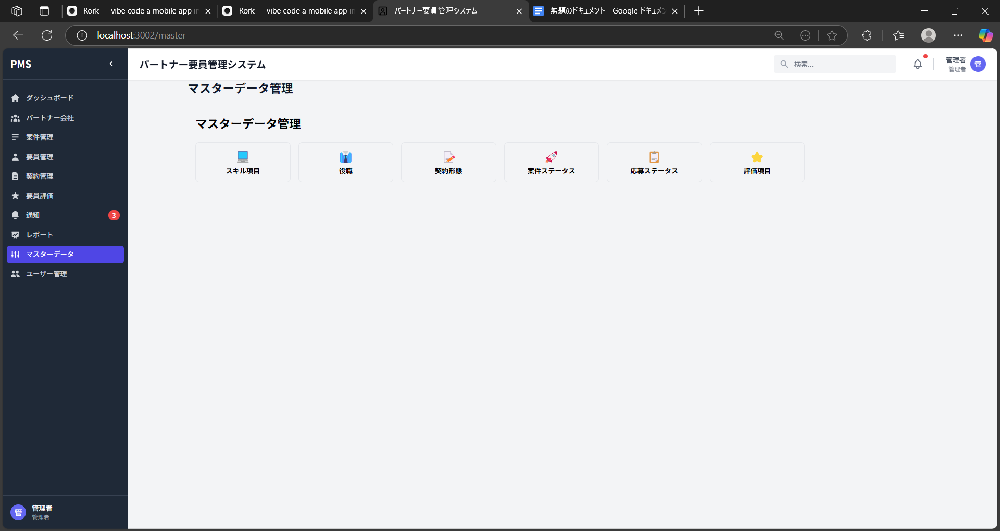

パートナー要員管理システム（Partner Management System: PMS）は、システム開発等で協業するパートナー会社およびその会社に所属する要員（エンジニア等）に関する情報を一元的に管理するためのシステムです。案件情報の登録・管理、パートナー会社への案件募集、応募者の選考プロセス管理、要員情報・契約情報の管理、プロジェクト終了後の要員評価など、パートナー要員管理業務の一連のフローをシステム上で完結させることができます。
本システムの最大の特長は、これまで別々に管理されていた開発担当者とパートナー管理担当者間の情報を一元化している点です。開発担当者はプロジェクトで必要となる要員の案件情報を起案し、パートナー管理担当者はそれを承認してパートナー会社への募集を行います。さらに、応募者の選考プロセスや採用後の契約管理、評価情報まで一貫して共有できるため、「言った・言わない」などのコミュニケーションギャップが解消され、透明性の高い業務フローを実現しています。また、単価変更依頼やクレーム連絡などの各種依頼も正式なワークフローとして記録・管理されるため、両者の円滑な業務連携を強力に支援します。
本システムは、最新のウェブ技術を駆使した3層アーキテクチャで構成されています。
| 層 | 技術 | 主な役割 |
|---|---|---|
| フロントエンド | React 18.x | UIコンポーネントライブラリ |
| TypeScript 5.x | 型安全な開発言語 | |
| ag-Grid Community/React | 高機能データグリッド表示 | |
| Zustand | 状態管理 | |
| React Hook Form + Zod | フォーム管理とバリデーション | |
| Axios | HTTP通信 | |
| バックエンド | NestJS 10.x | バックエンドフレームワーク |
| TypeScript 5.x | 型安全な開発言語 | |
| TypeORM | ORMツール | |
| Passport | 認証ライブラリ | |
| JWT | トークンベース認証 | |
| データベース | SQLite/PostgreSQL | リレーショナルデータベース |
ag-Grid Community/Reactを活用し、Excel感覚でデータを直接編集できる機能を実装しています。この機能により、一覧画面上で複数のデータを同時に編集でき、業務効率が大幅に向上します。
TypeScriptの型システムを最大限に活用し、フロントエンドとバックエンド間で型定義を共有するメカニズムを実装しています。これにより、両者間の一貫性が保たれ、型の不一致によるバグを防止しています。
案件申請や単価変更依頼などの業務プロセスをワークフロー化し、適切な承認フローを経て処理が進む仕組みを実装しています。これにより、業務の透明性と追跡可能性が高まります。
事業部と部のような階層構造を持つデータに対して、直感的なフィルタリング機能を実装しています。上位階層（事業部）を選択すると、それに関連する下位階層（部）の選択肢が動的に変化します。
ag-Gridの機能を拡張したカスタムデータグリッドコンポーネントを実装し、大量データの効率的な表示と操作を可能にしています。
React Hook FormとZodを組み合わせた再利用可能なフォームコンポーネントを実装し、入力フォームの作成と検証を効率化しています。
以下、システムの各機能の操作方法を説明します。
システムを利用するには、まずログイン画面からユーザーIDとパスワードを入力してログインします。IDとパスワードは管理者から発行されます。「ログイン」ボタンをクリックするとシステムにアクセスできます。
ログイン後、最初に表示されるのがダッシュボード画面です。ここでは、システム全体の概況（案件数、要員数など）や最近の更新情報、アラート（契約期限が近いものなど）が表示されます。左側のサイドバーから各機能にアクセスできます。
登録されているパートナー会社の一覧を表示します。会社名、住所、ステータスなどの基本情報が表示され、検索ボックスで会社名などを検索できます。「新規登録」ボタンで新しいパートナー会社を追加できます。また、「編集モード」ボタンをクリックすると、Excel感覚で直接データを編集できるモードに切り替わります。
特定のパートナー会社の詳細情報を表示します。基本情報のほか、「反社チェック」「基本契約」「営業窓口」などのタブで関連情報を確認できます。画面右上の「編集」ボタンで編集モードに切り替えられます。
パートナー会社の反社会的勢力チェックの情報を管理する画面です。チェック実施日、実施者、チェック結果、有効期限などを登録し、関連書類をアップロードできます。定期的なチェックの実施と記録を支援し、コンプライアンス面でのリスク管理を強化します。
登録されている案件の一覧を表示します。案件名、担当部署、開始・終了日、ステータスなどの情報が表示されます。画面上部の検索ボックスや「事業部・部フィルター」で案件を絞り込むことができます。「編集モード」ボタンで一括編集モードに切り替わります。
案件一覧画面の編集モードです。Excel感覚で複数の案件情報を一括で編集できます。案件の基本情報、日付、ステータスなどを効率的に編集でき、必要スキルなどはカスタムセルエディタで簡単に編集できます。変更は一括保存されます。
登録されている要員（エンジニアなど）の一覧を表示します。氏名、所属パートナー会社、スキル、ステータスなどの情報が表示されます。検索ボックスを使用して、氏名やスキルなどで検索できます。「編集モード」ボタンで一括編集モードに切り替わります。
要員一覧画面の編集モードです。エンジニア情報をエクセルライクなインターフェースで編集できます。氏名、所属会社、電話、メール、スキル情報などを一括で編集でき、変更はリアルタイムで追跡されます。スキル情報はタグエディタを使用して簡単に編集できます。
登録されている契約の一覧を表示します。契約相手、契約期間、金額、ステータスなどの情報が表示されます。検索やフィルタリングで必要な契約情報を素早く見つけることができます。
特定の要員に対する評価情報の一覧を表示します。評価者、評価日、評価項目（スキル合致度、成果物品質、コミュニケーション能力など）ごとのスコア、総合評価コメントなどが表示されます。これにより、要員のパフォーマンス履歴を把握できます。
システム内で発生した通知の一覧を表示します。未読/既読の管理、重要度によるフィルタリング、通知内容の詳細表示などが可能です。契約期限の接近、申請・承認状況の変更、新規応募などの重要なイベントを見逃さないようサポートします。
システムに蓄積されたデータを様々な角度から集計・分析し、業務状況の把握や意思決定に役立つレポートを作成・出力する画面です。パートナー会社別取引実績、案件別応募状況、スキル別要員リストなど、多様なレポートを生成できます。
システム全体で共通して使用される選択肢や分類項目を一元的に管理する画面です。スキル項目、役職、契約種別、各種ステータス、評価項目など、マスターデータの追加・編集・削除ができます。これにより、システム内での用語や分類の一貫性を確保しています。

システム利用者のアカウント情報を管理する画面です。新規ユーザーの追加、ユーザー情報の編集（氏名、所属、メールアドレス等）、アカウントの無効化、ロールの割り当てなどができます。各ユーザーの適切な権限設定により、セキュアなシステム運用を実現しています。